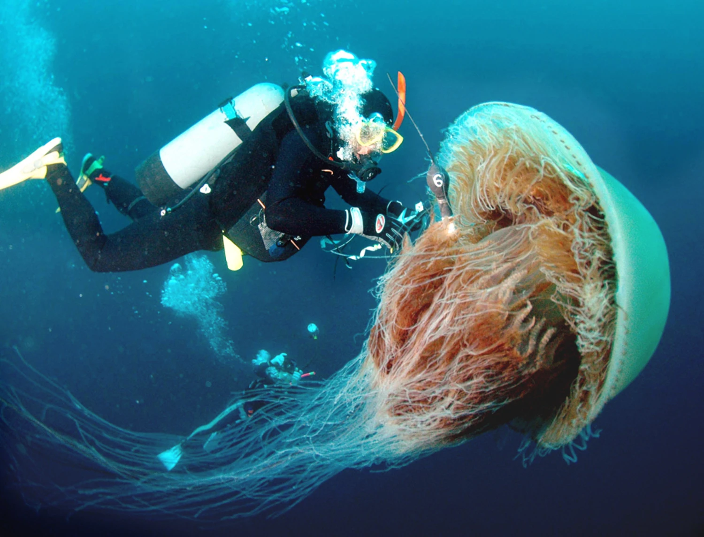
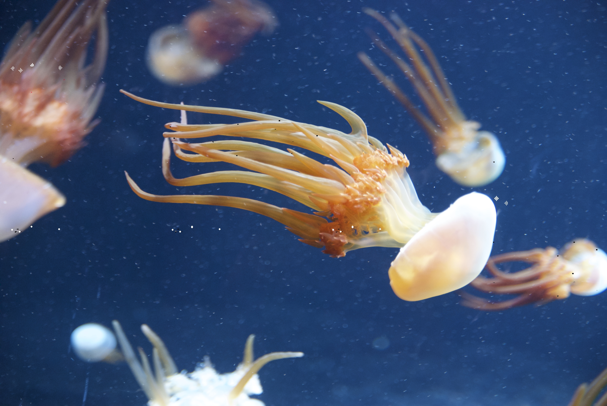
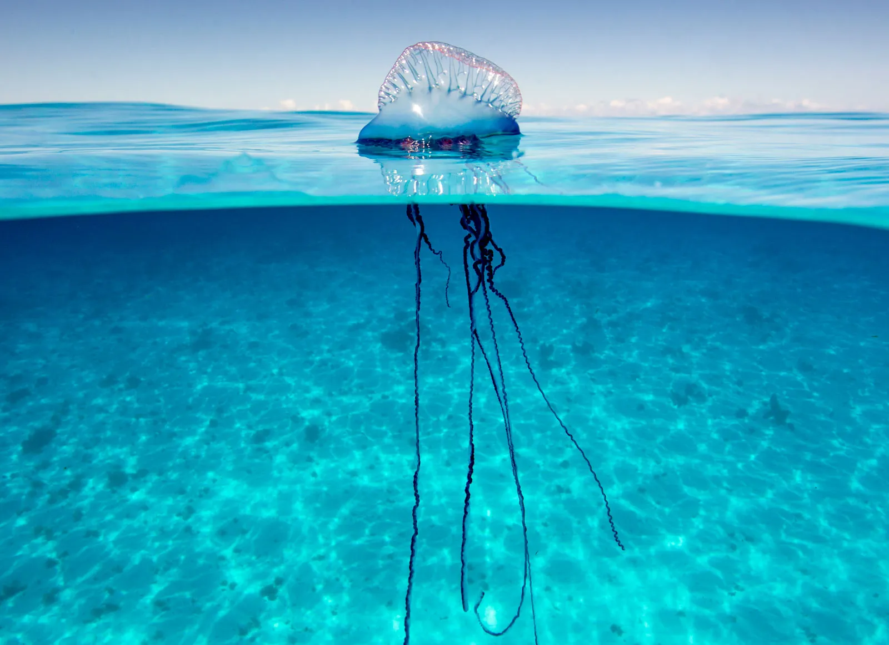

水母蜇伤是中国海滩最常见的海洋生物伤害。在中国沿海地区的相关调查中，水母蜇伤约占所有海洋生物伤害的60%以上。

图：NBC news, 野村水母（Nemopilema nomurai）
水母蜇伤的常见症状
- 皮肤红肿、疼痛和瘙痒
- 水泡和皮疹
- 严重时可能出现呼吸困难、心律不齐和过敏反应
水母蜇伤的处理方法
- 立即离开水域，避免进一步接触水母，若出现呼吸困难、意识模糊、胸闷心慌或大面积蜇伤，立即寻求医疗帮助
- 用海水冲洗伤口，切勿使用淡水或摩擦伤口
- 使用镊子或信用卡刮除残留的触手，切勿徒手抓或用毛巾来回擦拭
- 将患处浸泡在 40°C ~ 45°C 的热水中（或以个人能忍受的最高温度为准），持续20至30分钟
- 注意：临时处理方法因水母种类而异，具体操作应根据实际情况和医生建议进行

图：Wikipedia,沙海蜇（Cyanea nozakii）
需要警惕的种类
- 野村水母（Nemopilema nomurai）—体型巨大，毒性强
- 沙海蜇（Cyanea nozakii）—在中国近海数量增多
- 僧帽水母（portuguese man o' war）—虽然在中国较少见，但毒性极强，可能致命
水母蜇伤的严重程度取决于水母的种类、接触时间和个体的敏感性。虽然大多数水母蜇伤会引起局部症状，但某些种类（如僧帽水母）的蜇伤可能导致严重的系统性反应，甚至危及生命。
水母常见发生地点
水母蜇伤在中国沿海地区较为常见，以下是一些水母蜇伤的高发地点：
- 山东半岛沿海地区，野村水母最为常见
- 浙江，江苏沿海地区，野村水母与沙海蜇较为常见
- 福建沿海地区，僧帽水母与沙海蜇较为常见
- 海南，广东沿海地区，僧帽水母较为常见
图：NOAA, 水母暴发（jellyfish bloom）

图：Britannica, 僧帽水母（portuguese man o' war）
水母蜇伤的预防方法
- 在海滩上注意警示标志，避免在水母暴发期间游泳
- 穿着防水母服装（如潜水服）以减少皮肤暴露
- 避免触摸漂浮在水面或海滩上的水母，即使它们已经死亡
- 了解当地常见的水母种类和它们的活动季节，以便更好地预防
为什么近年来更危险
在中国沿海地区，水母蜇伤的发生率正在上升，尤其是在夏季和秋季。近年来，水母暴发（jellyfish bloom）的频率增加，这可能与海洋温度升高、过度捕捞和海洋污染等因素有关。
水母暴发会导致大量水母聚集在海滩附近，增加游泳者被蜇伤的风险。特别是对于儿童和老年人来说，水母蜇伤可能更危险，因为他们的免疫系统较弱，更容易出现严重反应。
因此，在夏季和秋季前往海滩时，游客应特别注意水母暴发的警告，并采取适当的预防措施以保护自己免受水母蜇伤的伤害。
← 返回首页